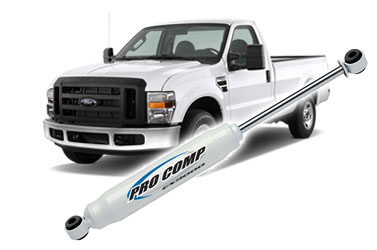
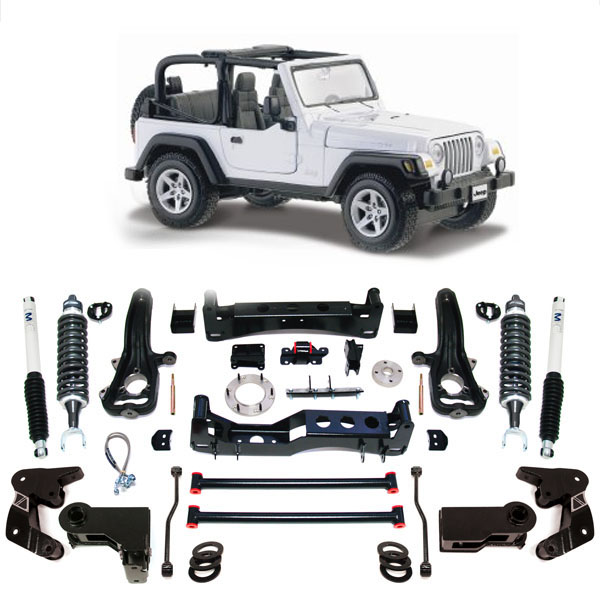

Explorer Competition Products Inc of Chula Vista, California, USA is a leading designer, manufacturer and value added marketer of quality off-road products. Their flagship brand name of Explorer Pro Comp suspension systems, shock absorbers, off-road lighting, tires and accessories are recognized worldwide.
Explorer Pro Comp manufactures products for most 4X4 vehicles available on the SA market. Apart from a wide range of suspension accessories, shock absorbers and steering stabilizers, Explorer Pro Comp also offers high quality lighting products, batteries, differential covers, wheels and tires.
For more info, go to www.explorerprocomp.com
